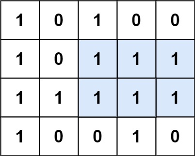

85. 最大矩形
| 题目信息 | 内容 |
|---|---|
| 难度 | 困难 |
| 核心模式 | 逐行转柱状图 + 单调栈求最大矩形 |
| 时间复杂度 | O(rows × cols) |
| 空间复杂度 | O(cols) |
题目与约束
给定一个仅包含 0 和 1 、大小为 rows x cols 的二维二进制矩阵，找出只包含 1 的最大矩形，并返回其面积。
示例 1：

输入：matrix = [["1","0","1","0","0"],["1","0","1","1","1"],["1","1","1","1","1"],["1","0","0","1","0"]]
输出：6
解释：最大矩形如上图所示。
示例 2：
输入：matrix = [["0"]]
输出：0
示例 3：
输入：matrix = [["1"]]
输出：1
提示：
-
rows == matrix.length -
cols == matrix[0].length -
1 <= rows, cols <= 200 -
matrix[i][j]为'0'或'1'
核心不变量
逐行维护
heights[j]：以当前第i行为底时，第j列向上连续'1'的高度；于是"以第i行为底的最大矩形面积"就等价于"以heights为柱高的柱状图中的最大矩形面积"。
完整推导
思路推导
- 直觉与痛点（二维直接枚举太贵）
直接枚举矩形的上下左右边界是 O(n^2 m^2) 甚至更高，无法接受。矩形面积 = 底 × 高，关键是能否把二维问题"压"成一维。
- 破局思路（把每一行当作柱状图的底）
固定某一行 i 作为矩形底边，定义 heights[j] 为第 j 列从第 i 行向上数连续 '1' 的个数：
- 若
matrix[i][j] == '1'，则heights[j] += 1； - 若为
'0'，则heights[j] = 0（柱子被截断）。
这样每一行都对应一个"柱状图"，问题就变成「柱状图中最大的矩形」（LeetCode 84），用单调栈在 O(cols) 内求出。
以示例 1 为例：逐行累加后，第 3 行的 heights = [3,1,3,2,2]，其最大矩形为高度 1 宽 5 或高度 2 宽 3 等，整体最大面积为 6。
- 关键追问（单调栈怎么求柱状图最大矩形？）
维护一个下标单调递增（对应高度单调递增）的栈。遍历到柱高 curHeight 时，凡是栈顶柱高 > curHeight 的柱子，其"向右扩展"到此为止，可以确定以它为高的最大矩形：高度取该柱高，宽度 = i - 栈中前一个下标 - 1（栈空则宽度为 i）。为了统一收尾，在末尾追加一个高度为 0 的哨兵，强制把栈中剩余柱子全部结算。
- 收尾
把每一行算出的最大面积取全局最大即可。空矩阵直接返回 0。
Java 实现（逐行柱状图 + 单调栈）
import java.util.ArrayDeque;
import java.util.Deque;
class Solution {
public int maximalRectangle(char[][] matrix) {
if (matrix == null || matrix.length == 0 || matrix[0].length == 0) {
return 0;
}
int rows = matrix.length, cols = matrix[0].length;
int[] heights = new int[cols];
int maxArea = 0;
for (int i = 0; i < rows; i++) {
// 更新以第 i 行为底的柱状图高度
for (int j = 0; j < cols; j++) {
heights[j] = (matrix[i][j] == '1') ? heights[j] + 1 : 0;
}
// 把当前行看作柱状图，求其最大矩形
maxArea = Math.max(maxArea, largestRectangleArea(heights));
}
return maxArea;
}
// 单调栈求柱状图中最大矩形（对应 LeetCode 84）
private int largestRectangleArea(int[] heights) {
int n = heights.length;
int maxArea = 0;
Deque<Integer> stack = new ArrayDeque<>(); // 存下标，对应高度单调递增
for (int i = 0; i <= n; i++) {
// i == n 时用高度 0 作哨兵，结算栈中残留柱子
int curHeight = (i == n) ? 0 : heights[i];
while (!stack.isEmpty() && heights[stack.peek()] > curHeight) {
int h = heights[stack.pop()];
// 栈空说明该柱可以延伸到最左，宽度为 i；
// 否则左边界是栈中新的栈顶下标 + 1
int width = stack.isEmpty() ? i : i - stack.peek() - 1;
maxArea = Math.max(maxArea, h * width);
}
stack.push(i);
}
return maxArea;
}
}
复杂度
- 时间：
O(rows × cols)。每一行更新高度是O(cols)，柱状图单调栈也是O(cols)（每个下标至多入栈、出栈一次），总共rows × O(cols)。 - 空间：
O(cols)。heights数组和单调栈的长度都不超过列数cols，与行数无关。
易错点与扩展（面试高频考点）
- 高度累加与归零写错：遇到
'0'必须把heights[j]置0（柱子断掉），否则会把不连续的'1'误算成同一块。 - 单调栈宽度公式写反：弹栈后宽度应为
i - stack.peek() - 1（栈空则为i），不是i - 弹栈下标，差一错误最常见。 - 忘记末尾哨兵：不追加高度
0，栈里剩下的柱子不会被结算，结果偏小。可在循环用i <= n且i == n时取高度0实现。 - 字符比较：
matrix元素是char的'1'/'0'，不是整数1/0，写成matrix[i][j] == 1会恒为假。 - 与 LeetCode 84 的关系：本题等价于"对每一行调用一次 84 题的柱状图最大矩形"，把 84 题吃透后本题只是加一层外层循环；若用暴力枚举高度会退化到
O(rows² × cols)，面试中要主动指出单调栈的优化。
力扣原题
C++ 实现
#include <vector>
#include <stack>
#include <algorithm>
using namespace std;
class Solution {
public:
int maximalRectangle(vector<vector<char>>& matrix) {
if (matrix.empty() || matrix[0].empty()) return 0;
int rows = matrix.size(), cols = matrix[0].size();
vector<int> heights(cols, 0);
int maxArea = 0;
for (int i = 0; i < rows; i++) {
for (int j = 0; j < cols; j++) {
heights[j] = (matrix[i][j] == '1') ? heights[j] + 1 : 0;
}
maxArea = max(maxArea, largestRectangleArea(heights));
}
return maxArea;
}
private:
int largestRectangleArea(vector<int>& heights) {
int n = heights.size();
int maxArea = 0;
stack<int> st; // 单调递增栈，存下标
for (int i = 0; i <= n; i++) {
int curHeight = (i == n) ? 0 : heights[i]; // 末尾哨兵
while (!st.empty() && heights[st.top()] > curHeight) {
int h = heights[st.top()];
st.pop();
int width = st.empty() ? i : i - st.top() - 1;
maxArea = max(maxArea, h * width);
}
st.push(i);
}
return maxArea;
}
};
Python 实现
class Solution:
def maximalRectangle(self, matrix: list[list[str]]) -> int:
if not matrix or not matrix[0]:
return 0
cols = len(matrix[0])
heights = [0] * cols
max_area = 0
for row in matrix:
for j in range(cols):
# 遇到 '1' 累加高度，遇到 '0' 归零
heights[j] = heights[j] + 1 if row[j] == '1' else 0
max_area = max(max_area, self._largest_rectangle_area(heights))
return max_area
def _largest_rectangle_area(self, heights: list[int]) -> int:
n = len(heights)
max_area = 0
stack = [] # 单调递增栈，存下标
for i in range(n + 1):
cur_height = 0 if i == n else heights[i] # 末尾哨兵
while stack and heights[stack[-1]] > cur_height:
h = heights[stack.pop()]
width = i if not stack else i - stack[-1] - 1
max_area = max(max_area, h * width)
stack.append(i)
return max_area